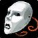

Übersicht
Level29–38
GebietThe Barrens
KategorieHordegebiet
TypClassic
Eingang: Wailing Caverns / Razorfen entrances. Die Gebietskarte findest du im Reiter „Gebietskarte“.
Bosse & Loot
Icons: bekannte Item-IDs nutzen Original-Wowhead-Icons; übrige Einträge bekommen mindestens ein passendes Slot-/Waffenicon statt eines kaputten Bildes.

Roogug
3 bekannte Loot-Einträge
Aggem Thorncurse
3 bekannte Loot-Einträge
Death Speaker Jargba
3 bekannte Loot-Einträge
Overlord Ramtusk
3 bekannte Loot-Einträge
Agathelos the Raging
3 bekannte Loot-Einträge
Blind Hunter
3 bekannte Loot-Einträge
Earthcaller Halmgar
2 bekannte Loot-Einträge
Charlga Razorflank
3 bekannte Loot-Einträge
Notable BoE / Trash
5 bekannte Loot-Einträge
Dungeonquests
Quelle: Wowhead Forever „Every Dungeon Quest“, aktualisiert 31.10.2026. Beta-Dungeons können noch unvollständig sein.
Allianzquests
Keine fraktionsspezifischen Quests in der lokalen Liste. Siehe Wowhead-Quelle unten.
Hordequests
A Vengeful Fate · Level 29Start: Thunder Bluff – Auld Stonespire
Going, Going, Guano! · Level 30Start: Undercity – Master Apothecary Faranell
Neutral / Klasse
Willix the Importer · Level 25Start: Im Dungeon – Escort
Blueleaf Tubers · Level 20Start: The Barrens – Razzeric-style neutral quest
Mortality Wanes · Level 25Start: Im Dungeon / Drop
The Barrens – Dungeon-Eingang
Marker: Wailing Caverns / Razorfen entrances
Die Karte zeigt das komplette Gebiet, nicht mehr nur eine schematische Platzhalterfläche.